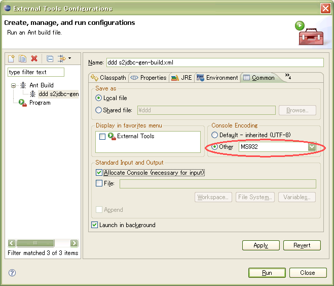
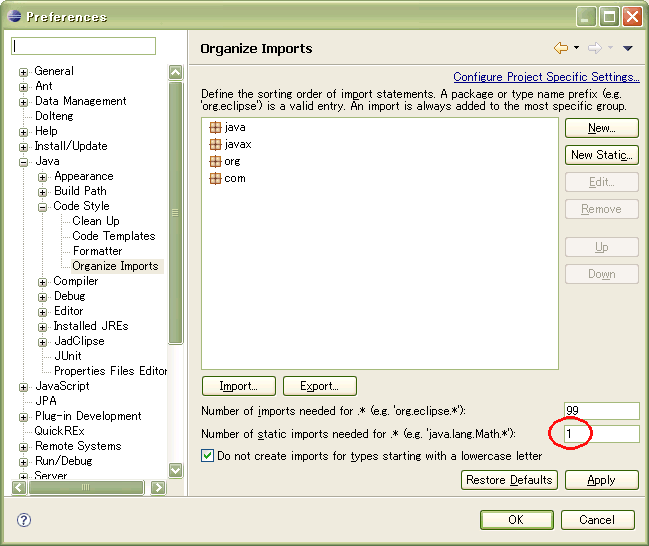
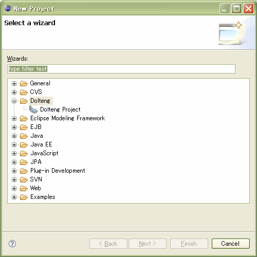
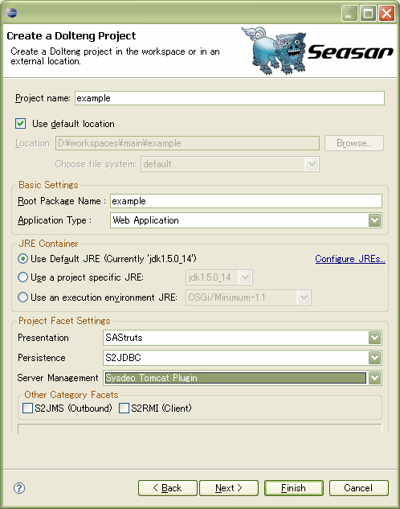
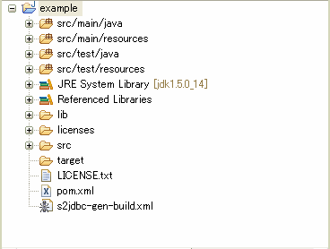

概要
配布ファイルを使用する場合
S2JDBC-Genのセットアップの前にS2JDBCのセットアップ が必要です。
配布ファイルのS2JDBC-Gen-x.x.x.zipは、ダウンロードのページ から取得できます。 配布ファイルを解凍し、S2JDBC-Genのjarファイル（s2jdbc-gen-x.x.x.jar）とFreeMarker のjarファイル（freemarker-2.3.x.jar）を任意の場所に配置してください。
Doltengを使用する場合
Doltengの利用 を参照してください。
ビルドファイルの準備
S2JDBC-GenのAntタスクを実行するためにAntのビルドファイルが必要です。 簡易的なビルドファイルを用いて説明します。
実践的なビルドファイルの例はタスクの使用例 を参照ください。 Doletengを使って最適なビルドファイルを自動生成させることもできます。 DoltengについてはDoltengの利用 を参照してください。
<project name="sample" default="gen-ddl" basedir=".">
<path id="classpath">
<pathelement location="build/classes"/>
<fileset dir="lib"/>
</path>
<taskdef resource="s2jdbc-gen-task.properties" classpathref="classpath"/>
<target name="gen-entity">
<gen-entity
rootpackagename="examples"
classpathref="classpath"
/>
</target>
<target name="gen-ddl">
<gen-ddl
classpathdir="build/classes"
rootpackagename="examples"
classpathref="classpath"
/>
</target>
<target name="migrate">
<migrate
classpathdir="build/classes"
rootpackagename="examples"
classpathref="classpath"
/>
</target>
</project>
クラスパスの設定
S2JDBC-GenのAntタスクの多くは、実行時にエンティティクラスを参照します。 また、S2JDBCの動作に必要なjarファイルに加え、s2jdbc-gen-x.x.x.jarとfreemarker-2.3.x.jarが必要です。 すべてのAntタスクからエンティティクラスやjarファイルを参照できるように、あらかじめクラスパスを設定しておきます。
<path id="classpath">
<pathelement location="build/classes"/>
<fileset dir="lib"/>
</path>
ここでは、"build/classes"がエンティティクラスを格納するディレクトリとします。 また、"lib"が必要なjarファイルを格納するディレクトリだとします。
タスク定義の参照
S2JDBC-Genのタスク定義は、s2jdbc-gen-x.x.x.jar内のs2jdbc-gen-task.propertiesに含まれています。 これを参照するためのに<taskdef>の定義が必要です。
<taskdef resource="s2jdbc-gen-task.properties" classpathref="classpath"/>
classpathref属性でs2jdbc-gen-x.x.x.jarを含めたクラスパスを参照するようにします。
タスクの記述
S2JDBC-Genのタスクを<target>要素の内側に記述します。
<target name="gen-entity">
<gen-entity
rootpackagename="examples"
classpathref="classpath"
/>
</target>
classpathref属性の指定を忘れないようにしてください。 S2JDBC-Genのタスク一覧や、タスクに記述できる属性についてはタスク を参照ください。
Antタスクの実行
Antタスクの実行方法として、コマンドラインから実行する場合とEclipseから実行する場合の2通りを説明します。 以下、ビルドファイルの名前をs2jdbc-gen-build.xmlだとします。
コマンドラインからの実行
Antをコマンドラインから実行する場合は、Apache Ant のインストールが別途必要です。
ビルドファイルが存在する階層に移動し、次のコマンドを実行してください。
ant -f s2jdbc-gen-build.xml ターゲット名
Eclipseからの実行
Windows上でEclipse3.4を利用する場合
s2jdbc-gen-build.xmlをAntエディタで開いて実行するか、s2jdbc-gen-build.xmlをAntビューに登録して実行してください。
ただし、Antは、Console EncodingにMS932を指定して実行する必要があります。 MS932を指定しない場合、ログがコンソールに正しく出力されません。
Console Encodingを指定して実行する手順は次のようになります。
- s2jdbc-gen-build.xmlをAntエディタで開きます。
- メニューから「Run」-「Extenal Tools」-「Extenal Tools Configurations...」を選択します。Extenal Tools Configurationsダイアログが開きます。
- 左側のメニューにある「Ant Build」という項目をダブルクリックし、s2jdbc-gen-build.xmlに対する設定を新規作成します。
- ダイアログの「Common」タブの「Console Encoding」にMS932を指定します。MS932がコンボボックスに表示されていない場合は一旦ワークスペースやプロジェクトのエンコーディングをMS932に変更すると登場するようになります。
- ダイアログの「Run」ボタンを押しAntを実行します。

この設定は、ビルドファイルに含まれるターゲットごとに行う必要があります。
Windows上でEclipse3.5を利用する場合
S2JDBC-Genが配布するs2jdbc-gen-build.xmlやDoltengの0.41.0以上のバージョンから生成されるs2jdbc-gen-build.xmlを修正し、vmarg.encodingプロパティに適切な値が設定されるように調整してください。 具体的な方法については、Eclipse 3.6 + Ant + S2JDBC-Gen 文字化け、コンソール停止 が参考になります。
Windows上でEclipse3.6を利用する場合
特別な設定は不要です。 ただし、S2JDBC-Genが配布するs2jdbc-gen-build.xmlやDoltengの0.41.0以上のバージョンから生成されるs2jdbc-gen-build.xmlを利用してください。
Eclipse
IDEとしてEclipseを使う場合に、参照してください。 便利な設定やプラグインについて説明します。
Organize Importsの設定
static importを便利に扱うための設定方法を説明します。
S2JDBC-Genのいくつかのタスクは、次のような、「.*」を使った一括のstatic importを利用したクラスを生成します。
import static example.entity.EmployeeNames.*;
public class EmployeeService {
...
}
しかし、EclipseのOrganize Imports機能は、この定義を、実際に使用されている個別のstaticメンバのインポート文へ変換してしまいます。
import static example.entity.EmployeeNames.employeeId;
import static example.entity.EmployeeNames.employeeName;
import static example.entity.EmployeeNames.salary;
public class EmployeeService {
...
}
この変換により、EmployeeNamesの他のstaticメンバがコンテンツアシストの候補にならなくなります（「.*」を使った一括のstatic importのままであれば、候補に挙がります）。 これは不便であるため、Eclipseを利用する場合、「.*」を使った一括のインポート文が個別のstaticメンバのインポート文に変換されないように「Organize Imports」の設定を行います。
「Organize Imports」の設定画面へは、メニューの「Window」-「Preferences」からダイアログを開き、ツリーメニューで「Java」-「Code Style」-「Organize Imports」と辿ってください。 「Organize Imports」の設定画面を開いたら、「Number of static imports for .*」の項目に1を設定します。

Doltengの利用
EclipseプラグインDolteng について説明します。 Doltengは次の更新サイトからインストールできます。
Doltengを使うと、S2JDBCを利用するプロジェクトの雛形を自動生成できます。 Doltengはプロジェクトの生成時にS2JDBC-Gen用のビルドファイルも一緒に作成します。 ビルドファイルにはプロジェクトの構成が反映されているため、特別な修正を施すことなくそのまま使用できます。
Doltengプロジェクトの作成
Doltengプロジェクトを作成する方法を説明します。
Eclipseのメニューから「File」-「New」-「Project」と選択し、プロジェクト作成のダイアログを開きます。

Dolteng Projectを選択すると次のダイアログが開きます。

Presentationに「SAStruts」、Persistenceに「S2JDBC」を選び、「Finish」ボタンを押してください。 プロジェクトが生成されます。

生成されたプロジェクトには、プロジェクト専用のビルドファイル「s2jdbc-gen-build.xml」が含まれます。 このビルドファイルは、S2JDBC-Genの配布ファイルで提供されるビルドファイルとほぼ同等のものです。 ビルドファイルに定義されたターゲットの説明は、タスクの使用例 を参照ください。
デフォルトでは、データベースにH2 Database Engineを使用する設定になっています。 他のデータベースを使用するには、jdbc.diconとs2jdbc.diconを修正してください。 設定方法についてはJDBCのセットアップ とS2JDBCのセットアップ を参照してください。 これらのファイルは、生成されたプロジェクトのsrc/main/resourcesディレクトリに配置されています。
ResourceSynchronizerの利用
EclipseプラグインResourceSynchronizer について説明します。 ResourceSynchronizerは次の更新サイトからインストールできます。
ResourceSynchronizerを使うと、Eclipseとは独立したプロセス内で作成されたマテリアルを自動的にEclilpseのワークスペースに反映させられます。 つまり、ワークスペースのリフレッシュが自動化されます。
S2JDBC-GenのAntタスクの多くはJavaファイルやDDLファイルを生成しますが、これらのファイルはワークスペースをリフレッシュしない限りEclipse上には表示されません。 そのため、Eclipse上で生成されたファイルを確認するには手動でのリフレッシュ操作が必要になります。 S2JDBC-Genでは、ResourceSynchronizerのプロセスにリクエストを投げるRefreshタスク を提供します。 ResourceSynchronizerがインストールされた環境でこのタスクを使用すれば、S2JDBC-Genによって作成されたファイルが自動的にワークスペースに表示されるようになります。CSVエディタ
Windows環境では、CSVエディタとしてCassava Editor を利用することを推奨します。
Cassava Editorの設定
S2JDBC-GenのいくつかのタスクはデータベースのダンプデータをCSV形式で出力します。 データを編集する際は、CSVエディタであるCassava Editorを利用するのが便利です。 以下に、推奨のCassava Editorの設定方法を示します。
- メニューから「表示」-「一行目を固定」を選びます。これによりヘッダー行が固定されます。
- メニューから「オプション」-「オプション」を選びます。ダイアログが表示されたら「データ形式」を選択し、「必要なセルのみ""で囲む」にチェックします。これにより、nullのデータを維持できます。
- メニューから「オプション」-「オプション」を選びます。ダイアログが表示されたら「ファイル」を選択し、「ロード時に文字コードを判別する」をチェックします。
- メニューから「オプション」-「セーブ時文字コード」でタスクが利用するエンコーディング（デフォルトではUTF-8）と同じものを指定します。これにより、エンコーディングの誤変換を防ぎます。
S2JDBC-Genで扱うCSV形式の詳細についてはダンプファイル を参照してください。